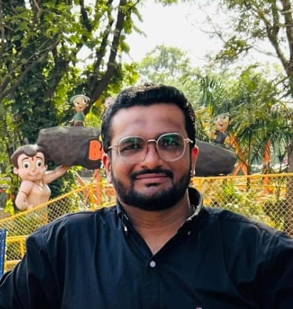
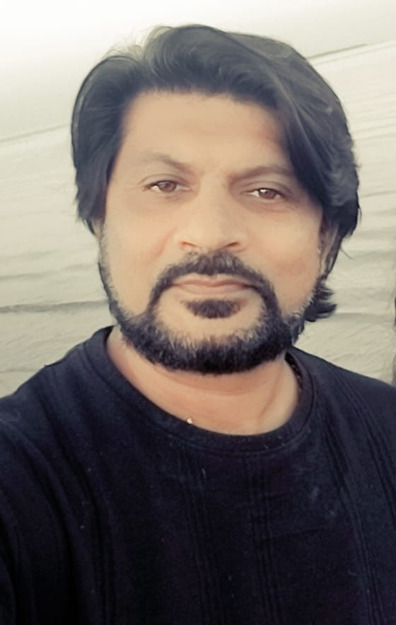
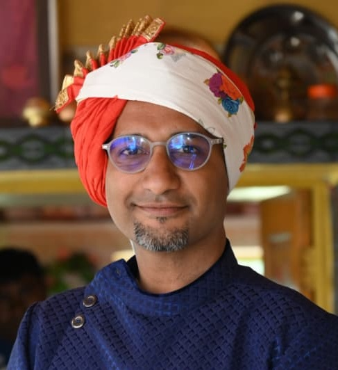

Meet Our Experts

Dipalsir
Founder & Senior Cyber Security Faculty
Ethical Hacking
Networking
Hardware
Server Admin

Janamsir
Web Backend Developer
Node.jsJavaScriptMySQLMongoDBSocket.ioAPIs
Krunalsir
Senior DevOps Engineer
DevOpsTerraformAnsibleLinux/Windows ServerCloud SecurityEthical Hacking

Kalpeshsir
Professional Graphic Designer & Choreographer
Graphic DesignCreative ArtsDance Choreography

Hitensir
Photography & 3D Casting Artist
PhotographyTattoo Art3D CastingCinematography